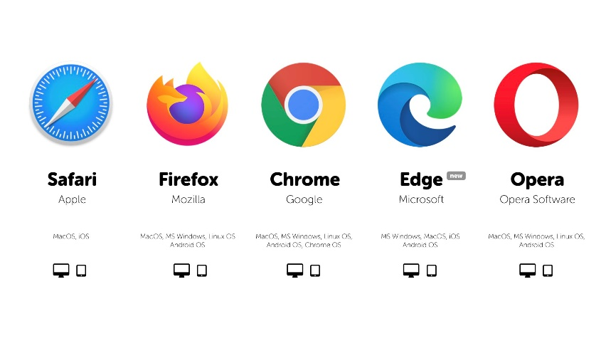
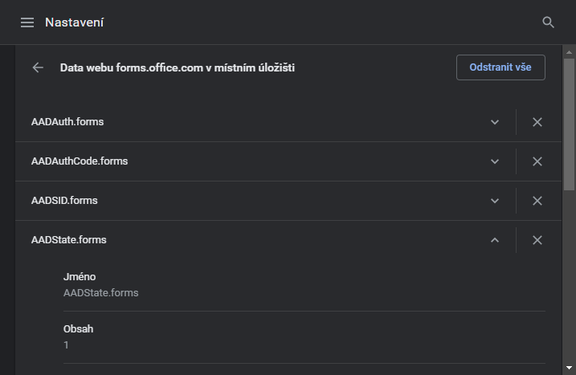

Vznik WWW a principy
World Wide Web (WWW, také pouze zkráceně web), ve volném překladu „celosvětová pavučina“, je označení pro aplikace internetového protokolu HTTP. Je tím myšlena soustava propojených hypertextových dokumentů. Služba se zrodila se v roce 1989 v evropském vědeckém centru CERN v Ženevě díky Timu Berners-Lee.
Za hypertext označujeme takový text, který obsahuje propojení na jiné texty pomocí tzv. hypertextových odkazů. Ve službě WWW jsou realizovány jako tzv. URL odkazy. Služba je založena na spolupráci WWW klientů (browserů) s WWW serverem. Prvním komerčním prohlížečem webových stránek byl na počátku 90. let minulého století Mosaic.
Při jejich spolupráci fungují následující mechanismy:
- komunikační protokol HTTP, pomocí něhož WWW klient a WWW server komunikují,
- jazyk HTML, definující formát WWW stránek, které server vrací klientovi.
W3C je mezinárodní konsorcium jehož členové společně s veřejností vyvíjejí webové standardy pro WWW. Konsorciu předsedá Tim Berners-Lee.
WWW - otázky a odpovědi
Webový server
Server je bezobslužný program, který přijímá a obsluhuje požadavky klientů. Webový server je připojen k počítačové síti a přijímá požadavky v souladu s protokolem HTTP (HTTP Request). Tyto požadavky vyřizuje a počítači, který požadavek vznesl, vrací odpověď.
Příklady webových serverů
- Apache
- NGINX
- Microsoft Internet Information Server
Webový klient
lient (browser, prohlížeč) je program, který komunikuje s uživatelem a na základě jeho pokynů se obrací na jednotlivé servery, získává od nich data a zobrazuje je. Nejběžnější klienti jsou:
Existují i klienti fungující v textovém režimu – např. LYNX.
Komunikace mezi webovým klientem a webovým serverem
Pomocí protokolu HTTP
Protokol funguje způsobem dotaz-odpověď (request-response). Uživatel pomocí prohlížeče pošle serveru dotaz ve formě čistého textu, obsahujícího označení požadovaného dokumentu, informace o schopnostech prohlížeče apod. Server poté odpoví pomocí několika řádků textu popisujících výsledek dotazu (zda se dokument podařilo najít, jakého typu dokument je atd.), za kterými následují data samotného požadovaného dokumentu. Pokud uživatel bude mít po chvíli další dotaz na stejný server (např. proto, že uživatel v dokumentu kliknul na hypertextový odkaz), bude se jednat o další, nezávislý dotaz a odpověď. Z hlediska serveru nelze poznat, jestli tento druhý dotaz jakkoli souvisí s předchozím. Kvůli této vlastnosti se protokolu HTTP říká bezestavový protokol – protokol neumí uchovávat stav komunikace, dotazy spolu nemají souvislost.
HTTP
HTTP (HyperText Transfer Protocol, standardní port na straně serveru je 80) - jednoduchý aplikační protokol s komunikací charakteru požadavek – odpověď. Žádosti mají formu jednoduchých příkazů a mohou být upřesňovány pomocí různých parametrů, tzv. hlaviček. Odpovědi mají číselný charakter a nejčastěji obsahují i WWW stránku, kterou klient požadoval. V současné době se používají verze HTTP 1.0 a HTTP 1.1, lišící se především v tom, jak se chovají k více souběžným požadavkům od jednoho klienta. Zatímco verze 1.0 každý požadavek vyřizuje samostatně, verze 1.1 dokáže sdružit více požadavků do jedné relace a přenášet v rámci stejného transportního spojení. HTTP je původně bezestavový protokol, neboť každý požadavek server vyřizuje bez ohledu na předchozí požadavky – tj. nepamatuje si žádný údaj zaslaný předešlou stránkou. V mnoha případech je však nutné zachovat informaci i při přechodu na další stránku (např. obsah virtuálního nákupního košíku, přihlašovací údaje atd.). Existují tři varianty řešení tohoto problému:
Stavové kódy HTTP
| Kód | Typ zprávy |
|---|---|
| 1.. | informační zpráva |
| 2.. | úspěch |
| 3.. | přesměrování |
| 4.. | chyba klientu |
| 5.. | chyba serveru |
protokol HTTPS
HTTPS je nadstavba protokolu HTTP, která poskytuje zvýšenou bezpečnost před odposloucháváním či podvržením dat. HTTPS není speciální protokol, protože data jsou přenášena pomocí HTTP: nejsou však přenášena v běžném textu, ale šifrována pomocí SSL nebo TLS (speciální vrstva vložená mezi vrstvu transportní a aplikační), což zaručuje ochranu proti útokům. Pro komunikaci pomocí HTTPS musí nejdříve server vlastnit certifikát. Certifikát musí být podepsán tzv. certifikační autoritou, která zaručí, že vlastník certifikátu se nevydává za nikoho jiného. Webové prohlížeče jsou většinou vybaveny podpisovými certifikáty největších podpisových autorit.
URL
URL definuje doménovou adresu serveru, umístění zdroje na serveru a protokol, kterým je možné zdroj zpřístupnit.
Cookies
Cookies (sušenky). Jsou Malé textové soubory, které si daný server může dočasně uložit na klientském počítači. Mají omezenou velikost a v případě vyššího bezpečnostního nastavení klienta mohou být zakázány
Internetový vyhledávač
- Prohledání webových stránek. Pro prohledání webových stránek má internetový vyhledávač automatický program, tzv. vyhledávací robot (crawler, bot, nebo též spider – „pavouk“), který prochází celý webový prostor. Robot dostane na začátku seznam atraktivních vstupních míst (odkazů), jejichž obsah si přečte, uloží do databáze a zapamatuje si navštívenou adresu odkazu, aby se na ni již podruhé nevracel. Z obsahu stažené stránky vybere seznam všech obsažených odkazů a opět všechny odkazy navštíví. Cyklus návštěvy, sesbírání odkazů a dalších návštěv se stále opakuje. Robot se na navštívené stránky vrací v pravidelných intervalech, aby zjistil, zda se na stránce neobjevily nějaké nové informace. Z principu práce vyhledávače vyplývá, že nikdy nemá úplně aktuální informace, ale prezentuje je se zpožděním.
- Indexování. Databázi obsahující uložené obsahy navštívených stránek je potřeba indexovat, aby bylo možné
podle zadaných slov co nejrychleji najít adresy stránek, které je obsahují. Zároveň je nutné vystavět index
tak, aby poskytoval na prvních místech stránky s nejvyšší užitnou hodnotou (relevancí, mající nejvyšší
hodnocení kvality, nejvyšší váhu). Pro výpočet relevance se používají nejrůznější algoritmy, které jsou
založeny na nejrůznějších znacích stránek a různých úhlech analýzy jejich obsahu:
- Váha slov. Stránka má vyšší hodnocení, když má hledané slovo na stránce vyšší váhu. Váha slov se zvyšuje, je-li slovo v titulku stránky, nadpisu nebo blíže k začátku stránky, případně se na stránce opakuje. Váhu slov lze zneužít vkládáním atraktivních slov do obsahu stránky bez ohledu na její skutečný obsah nebo prostým opakováním slov. Vyhledávač se brání penalizací (snížením kvality) podezřelých stránek.
- Atraktivita stránky. Stránka má vyšší hodnocení, když na ni odkazuje více jiných stránek, protože zřejmě obsahuje zajímavé informace. Atraktivitu lze zneužít vytvářením falešných stránek, které odkazují na stránku, která má získat vyšší hodnocení. Vyhledávač se brání sledováním podezřelého náhlého hromadění odkazů.
- Vyhledávání. Databáze a její index se zpřístupní na vstupní stránce vyhledávače. Uživatel získá po zadání hledaných slov seznam adres, na kterých robot hledaná slova našel. Pro vyšší přehlednost se zobrazuje kromě odkazu ještě titulek stránky, a okolí nalezených slov.
HTML a hypertext
Hypertext – text, který obsahuje propojení na jiné texty pomocí tzv. hypertextových odkazů – ve službě WWW realizovány jako tzv. URL odkazy. Služba je založena na spolupráci WWW klientů (browserů) s WWW serverem. Při jejich spolupráci fungují následující mechanismy: